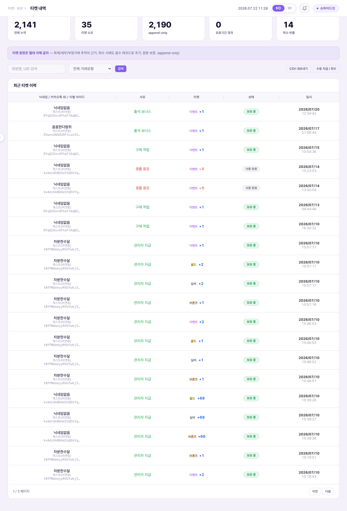
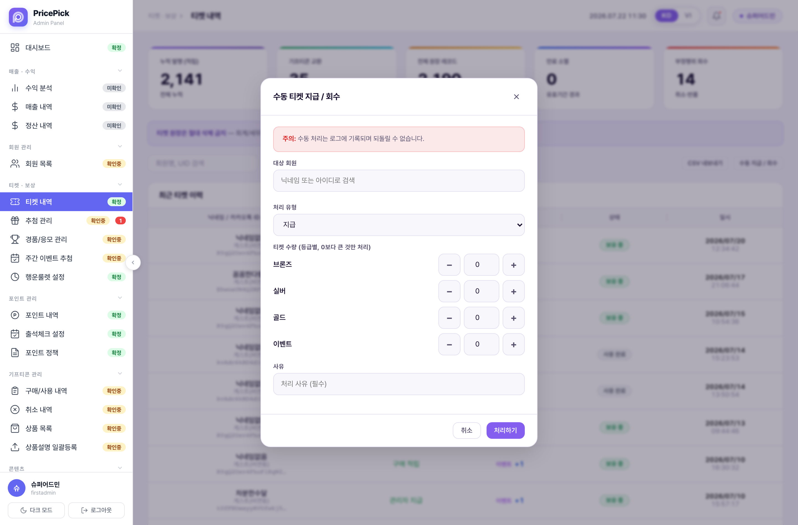

티켓 내역 = 회원이 가진 티켓 한 장 한 장이 언제, 왜, 얼마나 생기고 없어졌는지를 전부 기록하는 장부(원장) 화면. 여느 데이터 화면처럼 값을 고쳐 쓰는 곳이 아니다 — 한 번 적힌 행은 절대 고치거나 지우지 않고, 새로운 사실이 생길 때마다 행을 계속 추가만 한다(append-only, "한 번 쓰면 지우지 않고 계속 추가만 하는 장부"). 은행 통장 거래내역과 똑같은 구조라고 생각하면 된다 — 잔액이 틀렸다고 과거 거래를 지우지 않고, 정정 거래를 새로 한 줄 추가하는 방식.Lịch sử vé = màn hình sổ cái ghi lại từng chiếc vé của hội viên được tạo ra khi nào, vì sao, và mất đi như thế nào. Đây không phải màn hình để sửa giá trị như thông thường — một khi đã ghi một dòng thì tuyệt đối không sửa hay xóa, mà mỗi khi có sự kiện mới thì chỉ thêm dòng mới (append-only, nghĩa là "sổ ghi chép một khi đã viết thì không xóa, chỉ được thêm vào"). Cứ hình dung giống hệt lịch sử giao dịch trong sổ ngân hàng — dù số dư có sai cũng không xóa giao dịch cũ, mà thêm một giao dịch điều chỉnh mới vào.
이 구조를 지키는 이유는 CMS 화면 자체에 명시돼 있다 — 회계·세무·부정거래 추적의 근거가 되기 때문이다. 나중에 "왜 이 회원 잔량이 이렇게 됐는가"를 추적할 때, 원장을 거꾸로 읽으면 모든 이력이 그대로 남아 있어야 한다.Lý do phải giữ nguyên cấu trúc này được ghi rõ ngay trong màn CMS — vì đây là căn cứ cho kế toán·thuế·truy vết gian lận. Sau này khi cần truy lại "vì sao số vé còn lại của hội viên này lại như vậy", đọc ngược sổ cái phải thấy toàn bộ lịch sử còn nguyên vẹn.

상단에 KPI 카드 5개가 있다 — 전체 누적 2,141(지금까지 발행된 모든 티켓 수) · 티켓 소모 35(경품 응모 등으로 사용해 없어진 수) · append-only 2,190(원장에 실제로 쌓인 행의 총 개수 — 양수·음수 행을 다 합친 값이라 이 숫자는 절대 줄어들지 않는다) · 유효기간 경과 0(소멸 처리된 수, 이유는 5번 항목 참고) · 취소·반품 14(주문 취소·반품으로 회수된 수). 이 카드들은 정보 표시 전용이며 클릭해서 설정을 바꾸는 기능이 아니다.Phía trên có 5 thẻ KPI — Tổng lũy kế 2.141 (tổng số vé đã phát hành từ trước đến nay) · Vé đã tiêu 35 (số vé đã dùng và mất đi, ví dụ do tham gia trúng thưởng) · append-only 2.190 (tổng số dòng thực tế đã tích lũy trong sổ cái — là tổng cả dòng dương lẫn dòng âm nên con số này tuyệt đối không giảm) · Đã quá hạn hiệu lực 0 (số vé đã bị hủy do hết hạn, xem lý do ở mục 5) · Hủy·hoàn trả 14 (số vé bị thu hồi do hủy/hoàn đơn hàng). Các thẻ này chỉ để hiển thị thông tin, không phải chức năng để bấm thay đổi cài đặt.
검색/필터 줄에는 회원명·UID 검색창과 "전체 거래유형" 드롭다운, 검색 버튼이 있고, 오른쪽에 "CSV 내보내기"와 "수동 지급 / 회수" 버튼이 있다. 아래 "최근 티켓 이력" 표는 닉네임/카카오톡ID/식별아이디 · 사유 · 티켓(등급 배지 + ±수량, 늘어난 건 초록, 줄어든 건 빨강) · 상태(보유 중/사용 완료) · 일시 컬럼으로 구성된다. 표시된 사유 예시로는 출석 보너스(+1 이벤트), 구매 적립(+1 이벤트), 경품 응모(−1 이벤트, 상태 "사용 완료"), 관리자 지급(등급별 +1~+69) 등이 있다. 페이지 하단은 "1 / 3 페이지" 형태로 넘긴다.Ở dòng tìm kiếm/lọc có ô tìm theo tên hội viên·UID, dropdown "Toàn bộ loại giao dịch" và nút tìm kiếm, bên phải có nút "Xuất CSV" và "Cấp/thu hồi thủ công". Bảng "Lịch sử vé gần đây" phía dưới gồm các cột Biệt danh/ID KakaoTalk/ID định danh · Lý do · Vé (huy hiệu hạng + số lượng ±, tăng thì màu xanh, giảm thì màu đỏ) · Trạng thái (đang giữ/đã dùng) · Thời gian. Các ví dụ lý do hiển thị gồm thưởng điểm danh (+1 vé sự kiện), tích lũy khi mua hàng (+1 vé sự kiện), tham gia trúng thưởng (−1 vé sự kiện, trạng thái "đã dùng"), cấp thủ công bởi admin (+1~+69 theo từng hạng), v.v. Cuối trang phân trang kiểu "1 / 3 trang".
| 요소Thành phần | 의미Ý nghĩa | 바꾸면 생기는 일Điều gì xảy ra khi thay đổi |
|---|---|---|
| KPI 카드 5개5 thẻ KPI | 발행·소모·누적행·만료·취소 현황을 한눈에 요약Tóm tắt nhanh tình trạng phát hành·tiêu·tổng dòng·hết hạn·hủy | 클릭 불가, 정보 표시 전용. 값은 원장이 쌓일 때만 자동 갱신Không thể bấm, chỉ hiển thị thông tin. Giá trị chỉ tự cập nhật khi sổ cái được ghi thêm |
| 회원명/UID 검색 + 거래유형 드롭다운Tìm tên/UID + dropdown loại giao dịch | 필터 축은 거래유형 하나뿐 — "보유중/사용완료" 같은 상태는 잔량 표시일 뿐이라 필터에서 빼고 상태 컬럼으로만 보여준다(해리 답변 #12 · 2026-07-16 확정)Trục lọc chỉ có một loại giao dịch — trạng thái như "đang giữ/đã dùng" chỉ là hiển thị số dư nên không đưa vào bộ lọc, chỉ hiện ở cột trạng thái (câu trả lời Harry #12 · chốt 2026-07-16) | 목록을 좁혀 보여줄 뿐, 원장 데이터 자체는 전혀 바뀌지 않음Chỉ thu hẹp danh sách hiển thị, dữ liệu sổ cái hoàn toàn không thay đổi |
| CSV 내보내기xuất file | 정산·회계팀에 넘길 원장 원본 데이터를 파일로 다운로드Tải xuống dữ liệu gốc của sổ cái để chuyển cho đội kế toán·quyết toán | 파일 생성만 하고 끝 — 원장에는 아무 행도 추가되지 않음Chỉ tạo file rồi thôi — không thêm bất kỳ dòng nào vào sổ cái |
| 수동 지급 / 회수 버튼Nút cấp/thu hồi thủ công | 모달을 열어 사람이 직접 새 원장 행을 추가하는 유일한 수동 경로(상세는 아래 스크린샷 참고)Mở modal để con người trực tiếp thêm dòng sổ cái mới — đường duy nhất để làm thủ công (chi tiết xem ảnh chụp bên dưới) | 처리하기를 누르는 순간 새 행(들)이 즉시 추가되고 회원 잔량에 반영됨Ngay khi bấm xử lý, dòng mới được thêm ngay lập tức và phản ánh vào số dư hội viên |
| "티켓" 컬럼(등급 배지 + ±수량)Cột "Vé" (huy hiệu hạng + số lượng ±) | 이 한 행에서 어느 등급이 얼마나 늘거나 줄었는지Ở dòng này, hạng nào tăng/giảm bao nhiêu | 표시 전용, 이 칸을 직접 고칠 수 없음 — 값을 바꾸려면 반드시 수동 지급/회수로 새 행을 추가해야 함Chỉ để hiển thị, không thể sửa trực tiếp ô này — muốn thay đổi giá trị bắt buộc phải thêm dòng mới qua cấp/thu hồi thủ công |
| "상태" 컬럼Cột "Trạng thái" | 보유 중/사용 완료 — 현재 잔량 상태를 보여줄 뿐, 원장 사유와는 별개 정보Đang giữ/đã dùng — chỉ hiển thị trạng thái số dư hiện tại, là thông tin tách biệt với lý do sổ cái | 표시 전용, 필터 대상 아님(위 참고)Chỉ để hiển thị, không phải đối tượng lọc (xem ở trên) |
한 가지 눈여겨볼 실제 데이터 — 차분한수달 회원의 2026/07/10 15:57 이력은 이벤트+1·골드+2·실버+2·브론즈+1, 총 4개 행으로 나뉘어 있다. 같은 초에 찍혀 있지만 한 행이 아니다. 이는 관리자가 "수동 지급 / 회수" 모달에서 여러 등급을 동시에 입력해 한 번의 처리로 등급 수만큼 원장 행이 나뉘어 생성된다는 뜻이다 — 아래 3번 항목에서 다시 설명한다.Có một dữ liệu thực tế đáng chú ý — lịch sử của hội viên 차분한수달 lúc 2026/07/10 15:57 được chia thành 4 dòng: vé sự kiện +1·vàng +2·bạc +2·đồng +1. Cùng ghi trong 1 giây nhưng không phải 1 dòng. Điều này có nghĩa là khi admin nhập nhiều hạng cùng lúc trong modal "Cấp/thu hồi thủ công", một lần xử lý sẽ tách ra thành nhiều dòng sổ cái theo số hạng — giải thích lại ở mục 3 bên dưới.

모달 제목은 "수동 티켓 지급 / 회수"이고, 빨간 경고 배너로 "주의: 수동 처리는 로그에 기록되며 되돌릴 수 없습니다."가 먼저 뜬다. 입력 항목은 대상 회원(닉네임 또는 아이디로 검색) · 처리 유형(지급/회수 드롭다운) · 티켓 수량(등급별, 0보다 큰 것만 처리) — 브론즈·실버·골드·이벤트 4개 등급 각각 −/입력/+ 스테퍼(기본값 0) · 사유 텍스트 입력(필수) · 취소/처리하기 버튼이다.Tiêu đề modal là "Cấp/thu hồi vé thủ công", banner cảnh báo màu đỏ hiện trước tiên: "Chú ý: xử lý thủ công sẽ được ghi log và không thể hoàn tác." Các trường nhập gồm hội viên mục tiêu (tìm theo biệt danh hoặc ID) · loại xử lý (dropdown cấp/thu hồi) · số lượng vé (theo từng hạng, chỉ xử lý giá trị lớn hơn 0) — 4 hạng đồng·bạc·vàng·sự kiện mỗi hạng có stepper −/nhập/+ (mặc định 0) · ô nhập lý do (bắt buộc) · nút hủy/xử lý.
"원장(ledger)"이란 회계에서 쓰는 말로, 한 번 쓰면 지우지 않고 계속 추가만 하는 장부를 뜻한다. 이 화면은 정확히 그 원칙으로 동작한다 — 값을 "수정"하는 개념 자체가 없고, 모든 변화는 새 행의 "추가"로만 표현된다."Sổ cái (ledger)" là thuật ngữ kế toán, nghĩa là một khi đã ghi thì không xóa, chỉ được thêm vào tiếp. Màn hình này hoạt động đúng theo nguyên tắc đó — hoàn toàn không có khái niệm "sửa" giá trị, mọi thay đổi chỉ được thể hiện bằng cách "thêm" dòng mới.
회수(관리자가 지급했던 티켓을 도로 거둬가는 처리)도 예외가 아니다. 관리자가 "수동 지급 / 회수"에서 회수를 선택해 처리해도, 원래 지급했던 +행을 찾아서 지우거나 값을 고치지 않는다. 대신 그 옆에 별도의 음수(−) 행을 새로 추가한다. 그 결과 원장을 보면 "언제 얼마를 줬는지"와 "언제 얼마를 도로 거뒀는지"가 각각의 행으로 나란히 남고, 둘 다 지워지지 않는다. 이게 이 화면에서 가장 중요하게 이해해야 할 단 한 가지다 — 회수는 삭제가 아니라 정정 기록의 추가다.Thu hồi (xử lý lấy lại vé mà admin đã cấp trước đó) cũng không ngoại lệ. Dù admin chọn thu hồi trong "Cấp/thu hồi thủ công" và xử lý, hệ thống không tìm dòng + đã cấp trước đó để xóa hay sửa giá trị. Thay vào đó, thêm một dòng âm (−) mới bên cạnh. Kết quả là khi xem sổ cái sẽ thấy "đã cấp bao nhiêu khi nào" và "đã thu hồi lại bao nhiêu khi nào" nằm song song ở từng dòng riêng, cả hai đều không bị xóa. Đây là điều quan trọng nhất cần hiểu về màn hình này — thu hồi không phải là xóa, mà là thêm một bản ghi điều chỉnh.
수동 지급 1건 = 원장 1행이 아니다. 위 2번 항목의 차분한수달 사례처럼, 관리자가 모달에서 등급 4개(브론즈·실버·골드·이벤트) 스테퍼에 각각 값을 넣고 한 번에 "처리하기"를 눌러도, 원장에는 등급 수만큼 행이 나뉘어 생긴다. "처리" 액션은 1건이지만 원장 행은 여러 개다.1 lần cấp thủ công không phải là 1 dòng sổ cái. Giống ví dụ 차분한수달 ở mục 2, khi admin nhập giá trị vào cả 4 stepper hạng (đồng·bạc·vàng·sự kiện) trong modal và bấm "xử lý" một lần, sổ cái sẽ tách ra thành số dòng bằng số hạng đã nhập. Hành động "xử lý" là 1 lần nhưng số dòng sổ cái lại nhiều hơn.
이 원장의 +/−수량 자체엔 금액이 찍히지 않는다. 등급별 단가(브론즈 100원 · 실버 1,000원 · 골드 2,000원)를 곱한 원가 환산은 통계 화면에서 별도로 계산한다.Số lượng +/− trong sổ cái này bản thân nó không ghi số tiền. Việc quy đổi chi phí gốc bằng cách nhân với đơn giá theo hạng (đồng 100 KRW · bạc 1.000 KRW · vàng 2.000 KRW) được tính riêng ở màn Thống kê.
등급 티켓(브론즈·실버·골드)은 발급일 + 1년이 지나면 자동 소멸하고, 이벤트 티켓은 발급일 + 100일 고정으로 소멸한다(v8 확정 — 이전에 쓰던 "추첨 회차 기준 최대 2회 이월" 방식은 폐기됨). 이 로직이 돌아가면 원장에 "만료 소멸"이라는 사유의 음수 행이 자동으로 추가된다(관리자 개입 없이 시스템이 직접 처리). KPI 카드의 "유효기간 경과"가 지금 0인 이유는 버그가 아니라 — 이 데모가 새로 만든 지 아직 100일·1년이 지난 티켓이 하나도 없기 때문이다.Vé theo hạng (đồng·bạc·vàng) sẽ tự động hết hạn sau ngày phát hành + 1 năm, còn vé sự kiện hết hạn cố định sau ngày phát hành + 100 ngày (chốt ở v8 — phương thức cũ "chuyển tối đa 2 lần theo kỳ quay số" đã bị bãi bỏ). Khi logic này chạy, sổ cái sẽ tự động thêm dòng âm với lý do "hết hạn" (hệ thống tự xử lý, không cần admin can thiệp). Lý do thẻ KPI "Đã quá hạn hiệu lực" hiện đang là 0 không phải lỗi — mà vì demo này vừa mới tạo nên chưa có chiếc vé nào đã trải qua đủ 100 ngày hoặc 1 năm.
구매 적립은 카카오 연동 여부에 따라 연동 D+7 / 미연동 D+30의 확정 대기 기간을 거친다. 이 기간엔 상태가 "가지급(대기)"로 표시되고, 대기가 끝나면 랜덤(등급 미정) 티켓이 실제 등급 티켓으로 바뀐다. 이건 티켓이 없어지는 소멸이 아니라, 어떤 등급이 될지 정해지는 대기다 — 5번 항목의 "유효기간 경과"와는 완전히 다른 개념이니 혼동하지 말 것.Tích lũy khi mua hàng sẽ trải qua thời gian chờ xác nhận D+7 nếu đã liên kết Kakao / D+30 nếu chưa liên kết. Trong thời gian này trạng thái hiển thị "tạm cấp (chờ)", khi hết thời gian chờ thì vé ngẫu nhiên (chưa xác định hạng) sẽ chuyển thành vé hạng thật sự. Đây không phải là vé mất đi do hết hạn, mà là thời gian chờ để xác định sẽ thành hạng nào — hoàn toàn khác với "Đã quá hạn hiệu lực" ở mục 5, đừng nhầm lẫn.
| 상황Tình huống | 운영자가 하는 일Việc Vận hành viên làm | 사용자에게 생기는 일Điều xảy ra với người dùng |
|---|---|---|
| 부정 사용 적발 — 회수Phát hiện gian lận — Thu hồi 이상 거래로 획득한 티켓 발견Phát hiện vé có được qua giao dịch bất thường | "수동 지급 / 회수" → 대상 회원 검색 → 처리 유형 "회수" → 등급별 수량 입력 → 사유 필수 입력 → 처리하기"Cấp/thu hồi thủ công" → tìm hội viên → loại xử lý "thu hồi" → nhập số lượng theo hạng → bắt buộc nhập lý do → xử lý | 잔량Số dư 즉시 차감bị trừ ngay — 원래 지급 행은 지워지지 않고 새 음수 행만 추가됨dòng cấp gốc không bị xóa, chỉ thêm dòng âm mới |
| 이벤트 다등급 동시 지급Cấp nhiều hạng cùng lúc cho sự kiện 프로모션 보상으로 여러 등급 함께 지급Thưởng khuyến mãi cấp nhiều hạng cùng lúc | "처리 유형" 지급 → 4개 등급 스테퍼 중 해당 등급에만 값 입력 → 처리하기 (1회 클릭)"Loại xử lý" cấp → chỉ nhập giá trị vào các hạng cần thiết trong 4 stepper → xử lý (1 lần bấm) | 원장에는Trong sổ cái 입력한 등급 수만큼 행 생성tạo dòng theo số hạng đã nhập — 잔량은 처리 즉시 각 등급별로 반영số dư từng hạng được cập nhật ngay khi xử lý |
| 월말 회계·정산 자료 요청Yêu cầu tài liệu kế toán·quyết toán cuối tháng | 검색/필터로 원하는 범위 좁힌 뒤 "CSV 내보내기"Thu hẹp phạm vi bằng tìm kiếm/lọc rồi "Xuất CSV" | 회원에게 영향 없음Không ảnh hưởng đến hội viên — 원장 원본 그대로 파일로 다운로드될 뿐chỉ tải xuống file y nguyên bản gốc sổ cái |
| 발급 후 기간 경과 — 자동 소멸Quá thời hạn sau khi phát hành — Tự động hết hạn 등급 티켓 1년 / 이벤트 티켓 100일 경과 (향후 발생)Vé hạng quá 1 năm / vé sự kiện quá 100 ngày (sẽ xảy ra sau này) | 관리자 조치 없음 — 시스템이 자동으로 "만료 소멸" 행 생성Không cần admin thao tác — hệ thống tự tạo dòng "hết hạn" | 회원 잔량Số dư hội viên 자동 차감tự động bị trừ — 원장에 사유가 남아 추적 가능lý do được lưu lại trong sổ cái để có thể truy vết |
이 메뉴는 실제 CMS 좌측 사이드바에서 "확정" 배지가 붙어 있다 — 같은 그룹의 다른 화면들이 아직 확정 전 단계인 것과 비교하면, 티켓 내역은 화면 구성과 원장 원칙(append-only, 필터는 거래유형 하나)까지 정책적으로 이미 다 정리가 끝난 상태다.Menu này đã có huy hiệu "Đã chốt" ở sidebar bên trái của CMS thực tế — so với các màn hình khác cùng nhóm còn đang ở giai đoạn chưa chốt, Lịch sử vé đã hoàn tất cả về mặt chính sách lẫn cấu trúc màn hình và nguyên tắc sổ cái (append-only, trục lọc chỉ một loại giao dịch).
데모 CMS는 원장 조회·CSV 내보내기·수동 지급/회수 저장까지만 동작한다. 실제 결제·경품 응모·등급 전환 등 정식 서비스 이벤트가 자동으로 이 원장에 행을 쓰는 것은 정식 앱·서버와 연결됐을 때의 일이며, 지금 데모는 그 연동 없이 화면과 데이터 형태만 확정하는 기획 기준이다. 같은 이유로 KPI 수치(2,141 / 35 / 2,190 / 0 / 14)는 이 데모 안에서만 유효한 스냅샷이지, 실서비스 누적치가 아니다.CMS demo chỉ hoạt động đến mức tra cứu sổ cái·xuất CSV·lưu cấp/thu hồi thủ công. Việc các sự kiện dịch vụ chính thức như thanh toán thực tế·tham gia trúng thưởng·chuyển đổi hạng tự động ghi dòng vào sổ cái này là việc xảy ra khi kết nối với app·server chính thức, còn demo hiện tại là chuẩn thiết kế chỉ xác định màn hình và dạng dữ liệu mà chưa có kết nối đó. Cùng lý do, các con số KPI (2.141 / 35 / 2.190 / 0 / 14) chỉ là ảnh chụp có giá trị trong phạm vi demo này, không phải số lũy kế của dịch vụ thật.
회원 목록 → 회원상세 모달에도 똑같은 수동 지급 기능이 들어 있다 — 진입 경로만 다를 뿐, 결국 같은 원장에 행을 쓰는 같은 기능이다. 두 화면 어느 쪽에서 처리하든 이 화면의 "최근 티켓 이력" 표에 그대로 나타난다.Danh sách hội viên → modal chi tiết hội viên cũng có chức năng cấp thủ công y hệt — chỉ khác đường vào, rốt cuộc vẫn cùng một chức năng ghi vào cùng một sổ cái. Dù xử lý từ màn nào thì cũng sẽ hiện nguyên trong bảng "Lịch sử vé gần đây" của màn này.